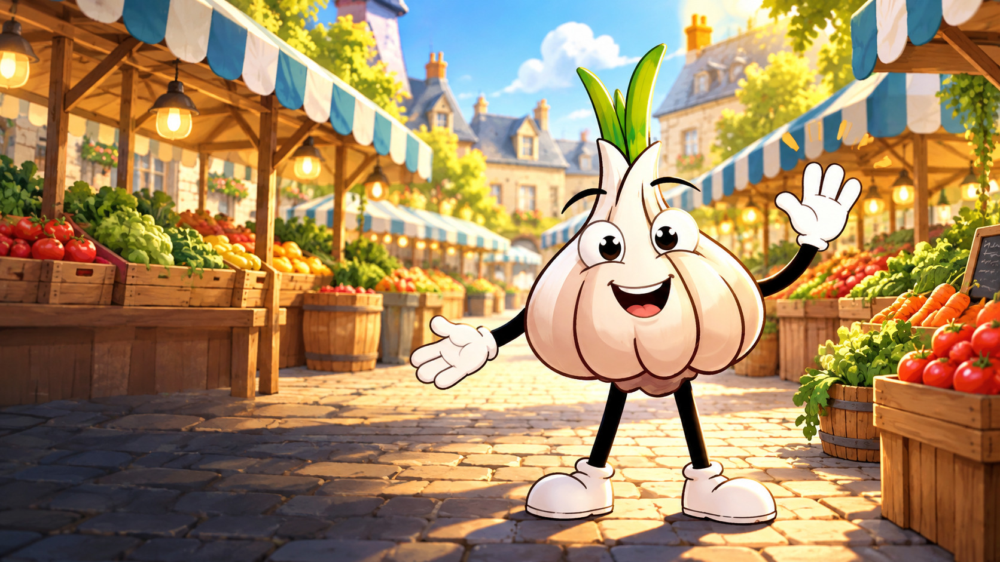
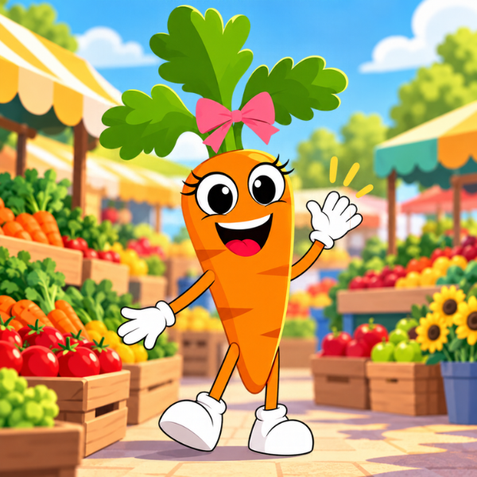
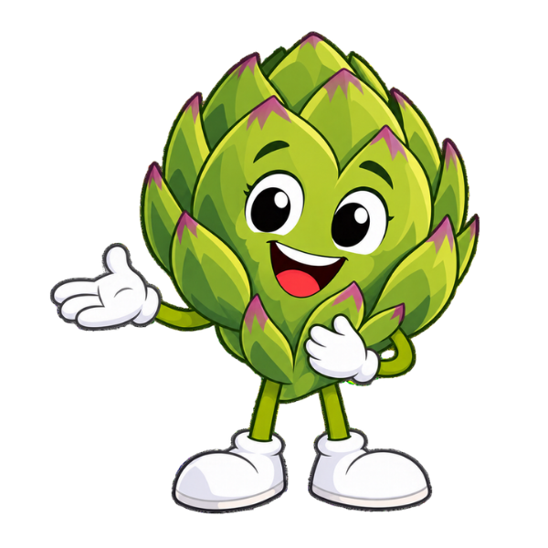

🥦
Make healthy food familiar
Characters give fruits and vegetables names, personalities and stories kids can remember the next time they see them on a plate.
Market Veggies uses imagination to make produce familiar, cooking approachable and movement fun. The goal is not perfection — it is helping children build positive, repeatable habits around food and activity.
Characters give fruits and vegetables names, personalities and stories kids can remember the next time they see them on a plate.
Simple family recipes turn tasting new foods into something kids can help make, customize and feel proud of.
Every recipe can lead into a playful activity, helping kids connect eating well with moving and playing and feeling energized.
They are funny, brave, shy, cool, dramatic and curious — and each one teaches kids what makes their fruit or vegetable worth getting to know.


Shy but determined. Carry helps kids discover beta-carotene, crunch and colorful meals.

Wise and refreshing. Artie shows that trying something different can be a very good thing.

Friendly, brave and full of energy. Tommy brings color, flavor and a whole lot of heart.

Sweet, upbeat and ready to move. Nanner helps kids learn about an easy grab-and-go fruit.

The books introduce children to the world, characters and lessons through fun adventures — then the website keeps the experience going with food facts, recipes and activities.